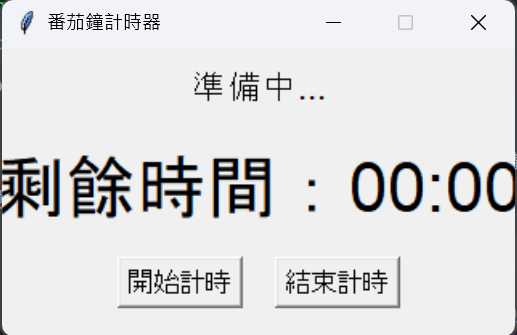
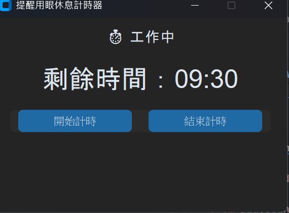

這篇文章有點流水帳，就是一篇製作玩具的過程隨筆。用AI寫程式可以做到自己以前做不到的，但遇到問題還是要想辦法解決，解決問題還是需要思考跟經驗，所以我想還是紀錄一下，供日後參考囉。
緣起
因為最近覺得用眼過度，想要一個小玩具來提醒自己要定時休息，由於倒數計時的功能不會很複雜，自己用還可以客製化自己想要的功能，所以就來動手做做看！
我先叫AI生了靜態倒數計時器的網頁，UI看起來很不錯：
{kind=link}
不過很就發現，它沒有辦法準時計時，因為瀏覽器會暫停閒置的網站，哭哭。
然後我就把歪腦筋動到了用 python 製作 exe 上，之前只是耳聞過 python 可以做到，但我其實沒有嘗試過製作一個 exe 檔，正好是個機會 :) 就來試試看吧！
使用環境
- Windows 11
- python version: 3.12.5
套件: - tkinter > 製作 GUI 的基本套件，優點是簡單，缺點是有些陽春 - customtkinte > 比較UI美觀的套件 - playsound > 播放聲音用的套件 - pyinstaller > 製作exe的套件
製作過程
第一步：開需求
我的需求如下：
- 每30分鐘跳視窗提醒休息5分鐘，使用者按按鈕再繼續計時。
- 螢幕上要顯示剩下幾分鐘。
- 以秒為單位更新畫面。
第二步：丟AI生架構
把需求丟給AI後，生了一個架構出來
import tkinter as tk
from tkinter import messagebox
import time
import threading
# 時間設定（秒）
WORK_DURATION = 30 * 60 # 30分鐘
BREAK_DURATION = 5 * 60 # 5分鐘
# GUI 主視窗
root = tk.Tk()
root.title("番茄鐘計時器")
root.geometry("320x180")
root.resizable(False, False)
status_label = tk.Label(root, text="準備中...", font=("Arial", 16))
status_label.pack(pady=10)
time_label = tk.Label(root, text="剩餘時間：00:00", font=("Arial", 32))
time_label.pack(pady=10)
# 控制計時的旗標
stop_flag = threading.Event()
def format_time(seconds):
minutes = seconds // 60
secs = seconds % 60
return f"{minutes:02}:{secs:02}"
def run_timer(duration, status_text, done_message):
remaining = duration
# 更新狀態文字
root.after(0, lambda: status_label.config(text=status_text))
while remaining >= 0 and not stop_flag.is_set():
display = f"剩餘時間：{format_time(remaining)}"
root.after(0, lambda d=display: time_label.config(text=d))
time.sleep(1)
remaining -= 1
if not stop_flag.is_set():
root.after(0, lambda: messagebox.showinfo("提醒", done_message))
def timer_loop():
while not stop_flag.is_set():
run_timer(WORK_DURATION, "⏱ 工作中", "⏰ 工作時間結束！請休息 5 分鐘")
run_timer(BREAK_DURATION, "☕ 休息中", "✅ 休息結束，準備進入下一輪")
def start_timer():
stop_flag.clear()
threading.Thread(target=timer_loop, daemon=True).start()
def stop_timer():
stop_flag.set()
status_label.config(text="計時已停止")
time_label.config(text="剩餘時間：00:00")
# 按鈕 UI
btn_frame = tk.Frame(root)
btn_frame.pack(pady=5)
start_btn = tk.Button(btn_frame, text="開始計時", command=start_timer, font=("Arial", 12))
start_btn.pack(side=tk.LEFT, padx=10)
stop_btn = tk.Button(btn_frame, text="結束計時", command=stop_timer, font=("Arial", 12))
stop_btn.pack(side=tk.RIGHT, padx=10)
# 啟動 GUI 主迴圈
root.mainloop()
但用 tkinter 做出來的介面有點醜，於是改用customtkinte替代，再追加希望有聲音提醒的需求，於是有了第二版：
import customtkinter as ctk
import time
import threading
from tkinter import messagebox
from playsound import playsound
WORK_DURATION = 30 * 60
BREAK_DURATION = 5 * 60
SOUND_FILE = "ding.mp3"
ctk.set_appearance_mode("dark") # 或 "light"
ctk.set_default_color_theme("blue")
app = ctk.CTk()
app.title("番茄鐘計時器")
app.geometry("360x220")
status_label = ctk.CTkLabel(app, text="準備中...", font=("Arial", 18))
status_label.pack(pady=10)
time_label = ctk.CTkLabel(app, text="剩餘時間：00:00", font=("Arial", 32))
time_label.pack(pady=10)
stop_flag = threading.Event()
def format_time(seconds):
minutes = seconds // 60
secs = seconds % 60
return f"{minutes:02}:{secs:02}"
def run_timer(duration, status_text, done_message):
remaining = duration
status_label.configure(text=status_text)
while remaining >= 0 and not stop_flag.is_set():
time_label.configure(text=f"剩餘時間：{format_time(remaining)}")
time.sleep(1)
remaining -= 1
if not stop_flag.is_set():
threading.Thread(target=lambda: playsound(SOUND_FILE), daemon=True).start()
messagebox.showinfo("提醒", done_message)
def timer_loop():
while not stop_flag.is_set():
run_timer(WORK_DURATION, "⏱ 工作中", "⏰ 工作時間結束！請休息 5 分鐘")
run_timer(BREAK_DURATION, "☕ 休息中", "✅ 休息結束，準備進入下一輪")
def start_timer():
stop_flag.clear()
threading.Thread(target=timer_loop, daemon=True).start()
def stop_timer():
stop_flag.set()
status_label.configure(text="計時已停止")
time_label.configure(text="剩餘時間：00:00")
btn_frame = ctk.CTkFrame(app)
btn_frame.pack(pady=10)
start_btn = ctk.CTkButton(btn_frame, text="開始計時", command=start_timer)
start_btn.pack(side="left", padx=10)
stop_btn = ctk.CTkButton(btn_frame, text="結束計時", command=stop_timer)
stop_btn.pack(side="right", padx=10)
app.mainloop()介面長得像這樣：

好看多了！
其實不用聲音檔，光有這樣的架構，再寫個 bat 呼叫腳本其實就能用了，但到這裡我開始越來越貪心，想要弄得更精細，於是又加了2個需求
- 聲音檔分成2個，工作時和休息時的音效不同
- 聲音只播一次，且要跟訊息一起出現
第三步：微調程式與參數
聲音檔分成2個
實際上需要改動2個地方，一個是在函數run_timer增加區分工作跟休息的音效，另一個是在函數timer_loop中塞入2個聲音檔。音檔可以自行去網路上找喜歡的，並且建議轉成.wav檔格式，執行程式時比較不會出問題(像.mp3就常會有有時可以順利播放有時無法)
# 主循環：工作 → 休息 → 循環
def timer_loop():
while not stop_flag.is_set():
run_timer(WORK_DURATION, "⏱ 工作中", "⏰ 工作結束！請休息 5 分鐘", SOUND_FILE)
run_timer(BREAK_DURATION, "☕ 休息中", "✅ 休息結束，準備進入下一輪", SOUND_FILE2)聲音只播一次，且跟訊息一起出現
這需要調整兩個函數：
# 播放音效（非阻塞）
def play_sound(file):
try:
pygame.mixer.music.load(file)
pygame.mixer.music.play()
except Exception as e:
print(f"⚠ 播放音效失敗：{e}")
# 執行計時器
# 這裡使用非阻塞方式播放音效，避免阻塞主線
def run_timer(duration, status_text, done_message, sound_file):
remaining = duration
status_label.configure(text=status_text)
while remaining >= 0 and not stop_flag.is_set():
time_label.configure(text=f"剩餘時間：{format_time(remaining)}")
time.sleep(1)
remaining -= 1
if not stop_flag.is_set():
play_sound(sound_file) # ✅ 非阻塞播放音效
messagebox.showinfo("提醒", done_message) # ✅ 等待使用者按下「確定」配合打包成exe的調整
因為py檔在執行程式時會認附加檔案的路徑，即使打包成exe後也是如此，因此需要就這一段做微調。
import os
import sys
# 取得正確路徑（支援 pyinstaller 打包後的執行檔）
def resource_path(relative_path):
"""取得資源真實路徑（支援開發階段與打包後）"""
try:
base_path = sys._MEIPASS # PyInstaller 的暫存資料夾
except Exception:
base_path = os.path.abspath(".")
return os.path.join(base_path, relative_path)
# 使用方式：
sound_file_path = resource_path("sound.wav")
# 程式使用 resource_path()，就可以正確找到聲音檔了。
# 例如播放聲音
import playsound
playsound.playsound(sound_file_path)執行時，PyInstaller 會自動把聲音檔解壓到臨時目錄中，這樣就可以找到聲音檔了。
第四步：打包成exe
用pyinstaller進行打包，首先要先安裝套件:
pip install pyinstaller基本指令
打包的基本指令為
pyinstaller your_script.py執行完成後系統會提示放在 .\dist的資料夾下，具體結構為：
your_script/
├── dist/
│ └── your_script.exe ← 可執行檔在這裡
├── build/
├── your_script.spec build/ 和 .spec 是中間產物，可以保留也可以刪除。
除此之外還有常用附加指令：
| 參數 | 說明 |
|---|---|
--onefile |
打包成單一 .exe 檔案（預設會拆成很多檔） |
--noconsole |
不顯示命令列（適合正式 GUI 程式），不輸入時點擊exe會跳出cmd畫面。 |
--icon=icon.ico |
指定執行檔圖示 |
實作注意事項： 1.
--onefile建議必加，不然會跑出很多資料夾or檔案有點像遊戲拆包2.--noconsole在測試階段可以不用加入，方便檢查程式被打包成exe後會不會有前面沒有出現過的錯誤訊息。
加入附加檔
假設加入的聲音為sounds.wav，那麼指令為：
--add-data "sounds.wav;."這裡的;後面是資料夾的意思，.表示跟主程式一樣放在同一個資料夾。如果有兩個就在後面繼續使用此指令。
如果聲音檔跟主程式放在不同資料夾，像這樣：
project/
├── main.py
└── sounds/
├── click.wav
└── error.wav那指令就是：
pyinstaller --onefile --add-data "sounds;sounds" main.py代表「把 sounds/ 整個資料夾加到 .exe 所在目錄中」
加入icon但沒顯示
--icon=icon.ico是顯示exe程式的圖示，可以自己找或加工一張png，再去轉成ico來用。生成exe後圖示不一定馬上會出現，通常過一段時間才會出現。
打包過程遇到的困難
在測試py腳本時一切順利，不過在打包exe遇到套件沒有安裝的神奇狀況，而且問AI，是它給的做法都完全沒用，後來仔細觀察pyinstaller產出的log才發現原來是我平常都把套件都安裝在 venv 的虛擬環境下，但是 pyinstaller 在執行時沒有調整過就會自動找全域環境，於是就用指令啟動虛擬環境，確認虛擬環境下有安裝pyinstaller後再執行打包就沒問題了。
中間還遇到一個有點蠢的問題XD，我常用的虛擬環境安裝在 “桌面” 下的資料夾，好死不死路徑名稱是中文的，導致專案在Vscode自動指定虛擬環境後還遇到因為無法辨識中文路徑而舞法啟用python的狀況XD。其實只要再建一個虛擬環境在C槽就好，但我就是不死心對原本的虛擬環境有感情ㄌ，一直找其他方法，後來用指令啟動虛擬環境後就好了，白繞了一點路XD。
不過最後我還是乖乖建新的虛擬環境了，不然其他專案早晚會出問題
心得
雖然是個簡單的小玩具，但中間為了客製化、解決遇到的問題還是花了一天多的時間還做出稍微滿意的樣子。不過也學到很多~ 作為逃避寫論文的娛樂也很好，下次有機會再來玩玩別的😄。